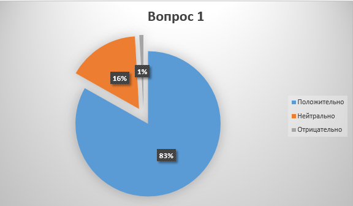
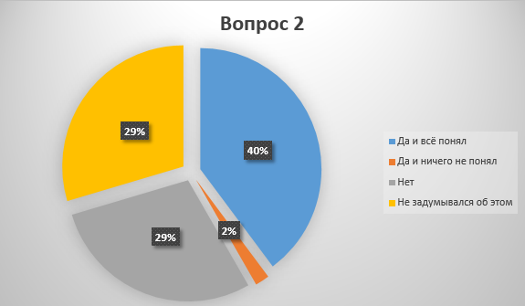

Всё большая часть подростков встречается с
насущной проблемой усвоения школьного образования и данный сайт создан в
целях ознакомить людей с более современным методом обучения, а именно с
помощью видеоигр
Наставления:
1.Использование Видеоигр уже было зафиксировано в США и оно пользовалось успехом так что не стоит опасаться о вреде
2.Отношение подростков к видеоиграм более чем положительно этот вывод сделан по результатам анкетирования

3.Материал поданный с помощью видеоигр понятен многим детям и это не без основано, этот вывод сделан по результатам анкетирования представленного ниже

4.Даннный вид обучения понятен как мальчикам так и девочкам так как в анкетировании приняло равное количество мальчиков и девочек
Вывод
В наше время преимущественно большая часть подростков
положительно относится к видеоиграм это можно понять по результатам 1
вопроса. Но к сожалению, не все они пытались или задумывались об
использовании видеоигр для усвоения школьного материала, к счастью те,
кто использовали видеоигры, удовлетворились результатам, это можно
понять из результатов 2 вопроса. Также многие учащиеся считают, что в
современном образовании видеоигры необходимо использовать в таких
предметах как: Математика, Информатика и Иностранный языки, а именно
игры в жанре «Головоломка» так как, в этом жанре игр мозговая активность
учащихся более продуктивна и дает больше результатов нежели другие
жанры. Обучение с помощью видеоигр стоит вводить начиная с 7 класса так
как именно в этом возрасте ребенок начинает понимать, что игры могут не
только развлекать, но и помогать в усвоении школьного материала